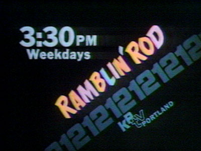

|
|
|
|
The Ramblin' Rod Show 1970-1979
The 1970s may have ushered in a new era for American culture, but for The Ramblin' Rod Cartoon Show, it was business as usual. The same ingredients that made Rod's show an immediate hit in the 1960s, proved just as popular in the next decade. Popeye and Bugs Bunny continued to be the primary source of animated entertainment, along with Hanna-Barbera favorites Yogi Bear, Huckleberry Hound, Lippy the Lion, Wally Gator, Touché Turtle and others. Children still competed in the "smile contest" for candy and prizes. Birthday guest were still serenaded by a bleacher full of tone-deaf well-wishers. As the decade progressed, however, the television landscape began to change. KPTV, as an independent, had ample time during the day for local programs. The other Portland stations, however, found themselves with fewer available hours, as ABC, CBS and NBC expanded their soap opera, game show and news franchises. The local children's shows, so abundant since TV's early days, started to disappear. By 1973, even KPTV stalwarts "Rusty Nails" and "Hobo Kelly" would sign off, leaving Rod as the last local kid's show in the market.
Another change would take place in 1975, as for the first time, The Ramblin' Rod Cartoon Show would be tape recorded, instead of airing live. KPTV moved the show to weekday mornings, and children who appeared on the show in the afternoon could now watch themselves the following morning. Buoyed by a lack of competition, Rod's show was expanded to an hour. Parents, anxious to see their child on TV, found themselves having to make reservations weeks or even months in advance. Rod's popularity continued to rise, and he continued to make public appearances at parades, fairs and festivals. He also reached outside of the children's community, doing live commercials for Mike Salta Pontiac, appearing on the yearly Jerry Lewis Telethon and taking over the hosting duties of 12 in the Morning from Gene Brendler. Rod's attire expanded, too, to include a brown sweater, which by the end of the decade, began sporting buttons given to him by adoring fans. |

The
opening
moments
of
another
Ramblin'
Rod
Show:
Rod
welcomes
an
excited--and
fidgety--group
of
children.

Rod gives a tip of the hat to long-time sponsor, Shakey's
Pizza.


1972:
KPTV's
station
identification
for
Rod
included
his
cartoon
likeness.

Orange
Crush,
an
early
sponsor
of
the
program,
got
prime
positioning
on
Rod's
boat.

Rod's
boat
gets
a
70s
upgrade,
a
new
logo
and
racing
stripes.

Rod
gets
ready
to
introduce
"another
cartoon...
here
we
gooooooooo!"

Rod
chats
with
his
guests.
Every
child
on
the
program
got
his
or
her
moment
in
front
of
the
camera.

1973
station
identification
for
the
show.

Late
1970s:
Opening
credits
are
produced,
featuring
a
TV
set
and
a
pair
of
hands
desperately
looking
for
(what
else?)
The
Ramblin's
Rod
Show.

Sitting
in
the
bleachers
next
to
a
young
fan,
Rod
never
tried
to
separate
himself
from
the
children
who
came
to
see
him.

"So
long,
everybodyyyyyyy!"
Another
Ramblin'
Rod
Show
ends
as
Rod
waves
and
"rides"
his
boat
behind
the
set
and
off
camera.


This page last updated on August 17, 2025
|
Yesterday's KPTV Website design and content ©2003-2025 by Ron Dunevant, LLC unless otherwise noted. |